Car City
Flies were everywhere in Kazakhstan, and they were getting on my nerves.
Even when I finally got myself a comfy bed, I had to win the patient contest with the flies before I can sleep in it.
During the day, the flies kept me company on my bike.
I couldn’t wave them away all the time because I did need to care for my own safety on the road.
Wearing the clothes that I just washed yesterday, I was ready to have my breakfast and leave.
This was a rather simple meal, some bread and a pot of milk tea (maybe 6 cups?). I like my milk tea VERY sweet, by adding two
cubes of sugar for each cup. I liked to watch the cubes of sugar gradually dissolved into the tea, very entertaining.
I should be able to arrive at the old capital city, which was less than 40 km away, around noon.
I was hoping that I could find this place that somebody gave me the information about.
Then I could spend the night there, and/or get online, or even some one will take me for dinner,
I also would like to buy a map, exchange the currency, etc.
IF I could fine this place, the place that I had only the street address with me.

Many hitchhikers were trying their luck on the way to the city.
You could see so many different kinds of cars on the road, except the taxi.
That is because ANY car can be a taxi, a FREE taxi, as long as you can get it to stop for you.
These hitchhikers, men and women, old people and young kids,
they stood there with their right hand hanging down to the body and pointing their index finger out. Looked pretty subtle to me,
but very efficient for them, almost everybody got his ride this way.
Those people didn’t look like tourists, and they seemed to be very used to this type of transportation “system”.
No matter where they want to go, just find a spot, stand there with the “standard” hand gesture,
get on the car that you feel comfortable and you will be there in no time.
Sounds a bit unbelievable, but I think this is the best demo of carpool ever.

The more I was closer to the city, the more cars I saw on the street.
The number of the cars was way more than the number of pedestrians walking on the street.
I finally found a city with worse air pollution than Taipei does.
However, the title of the “Worst city for bike riding” still belongs to Almaty, no doubt.
Although the road condition was much better closer to the city,
it was more dangerous to ride my Dido here due to the ridiculously large numbers of cars running on the road at the same time.
To make this experience even more exciting, these cars run so fast and pass you in a really close distance.
They didn’t bother to avoid you, and they didn’t bother to yield you.
I felt that my and Dido’s lives were purely on God’s hand here.
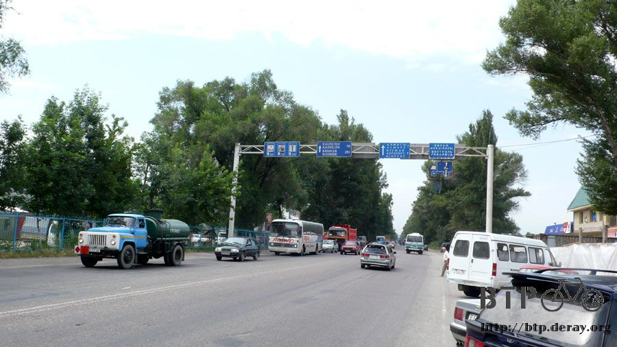
I remembered when I was in China, I used the Chinese character “正” to mark how many ice pops that I had each day
(this character is exactly 5 strokes, so is easy to mark the number,
“count by 5”, that is. Similar to Western people use 4 vertical lines cross with one horizontal line).
Here in Kazakhstan? I used the same character, but for different things.
Sometimes was the numbers of times that dogs chased me, sometimes was the number of dogs that chased me.
It was hard to count by dog, because sometimes they just all ran together after me at once.
Like today, I was chased by 6 dogs in total. My response was to first check what kind of dog/dogs was/were chasing me.
As long as they didn’t look scary enough to make me wet my pants, I would just let them be.
The trees by the two sides of the streets were so close to each other
that I could not see what kind of crops were behind the street. All I could see here was tree, tree, and more trees.
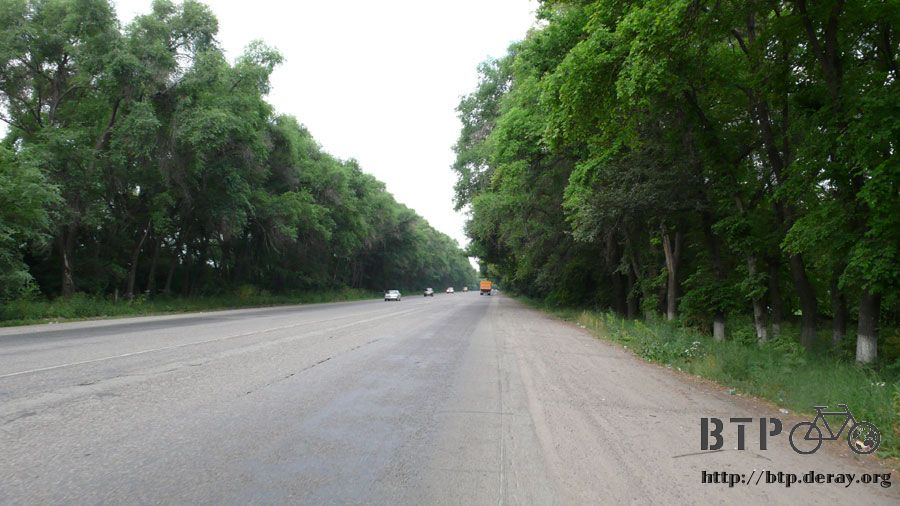
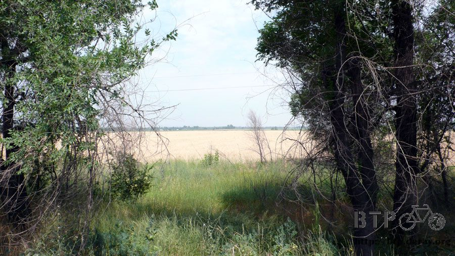
Well, natural calls.

Around noon, I finally arrived in Almaty, the first big city of Kazakhstan for me.

I expected to see skyscrapers one after another, but… I only saw regular size buildings,
no business district-like area, and only wide road/street.
I thought may be this was not IN the center of the city yet, maybe I will see very city-like area later?
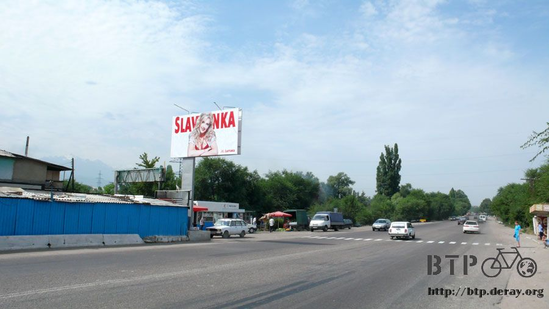
This is the logo(official seal) of Almaty city. Almost every decent size city here has its own official seal.
Some use produce, Almaty is kind of unique by using a snow leopard on their official seal.
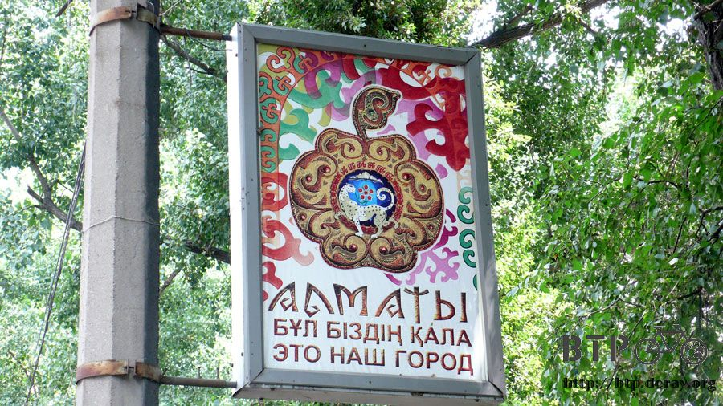
I actually rode around the entire city and my conclusion was,
maybe we should call Almaty a very big village instead of a “city”.
I exchanged about 12,000 Tenge at the border. And I finally got a sense of how much should/could I spend each day now.
So far my average expense was 1500 Tenge each day.
I only stayed at the hotel no more than twice a week, so that I could take shower and do the laundry.
I should have enough cash while I am in this country.

I was just wondering how come there were so many cars.
Maybe the public transportation was not well-developed yet?
I rarely saw bus here, but I did see some train stations.
The train was running through the city on a rail that without any fence beside it, nice view, but kind of dangerous to me.


When I got a closer look, I found that both right-hand and left-hand driving vehicles were running
on the same road in harmony, which was really amazing to me.
When there was no traffic light available, a policeman would be sitting on their motorcycle to direct the traffic.
You’d better follow whatever he said, unless you want to get yelled at.

This is really a “car city”, cars are just everywhere in this city.

Oh. I finally saw some construction workers. They are the reason that Almaty has such an excellent road condition.
I only hoped the road condition outside of the city was as good as this.
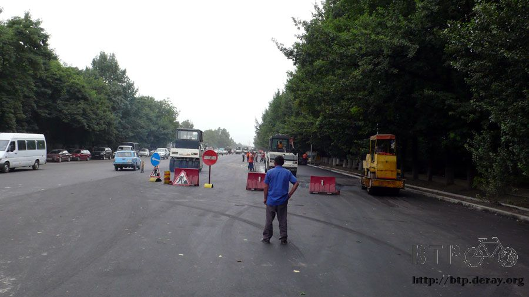
I was kind of hungry when I was leaving Almaty at 2 o’clock in the afternoon.
I was not sure if this was a restaurant of a hardware store, until I saw the tables and chairs outside, I knew I found food.
I parked Dido and checked what other people ordered: noodle, fried hamburger with rice, salad,bread and milk tea.
Everything looked delicious to me; I just needed to figure out how to order some for myself.
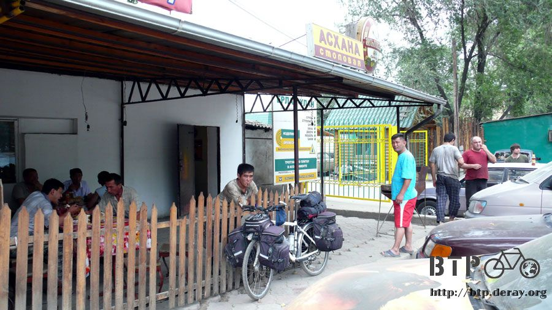
A guy eating his meal looked at me and “asked”- with his hand gesture, if I would like to eat something.
I replied with nodding my head like crazy.
Then a young guy with a white bandage on his face came to seat me and ordered some food for me.
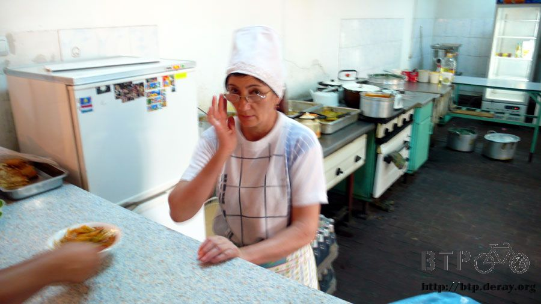
I looked at other people’s food on the table and showed him what I would like to have.
So thanks to him, here was what I had: beef stew noodle, pork-stuffed pepper, meat-stuffed bread, and of course, milk tea.
I enjoyed every single one of them very much. This was just totally my kind of food and, importantly, my kind of price.

The milk tea was great, but I always saw sheep poop-like thing at the bottom of the cup.
It seems like the tea at Kazakhstan was processed in a special way.
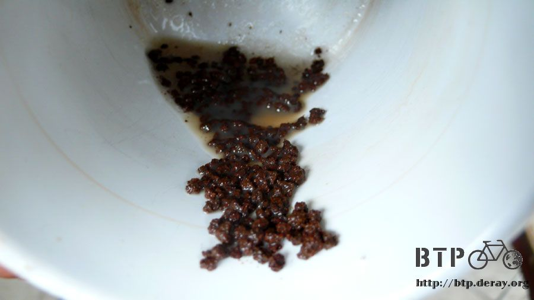
No matter where I go, people are always interested in my Dido.
The only difference of here and other places was, I could not understand what they were asking about anymore.
Therefore, I would “assume” their questions and answered them in my way.
For example, I always patted my chest and said “Taiwan”, meaning I am from Taiwan.
Well, maybe some of them have heard of Taiwan, but definitely don’t know much about it.
Otherwise they won’t ask if I rode my bike from Taiwan to Kazakhstan.
I guess not many people in Kazakhstan know Taiwan is an island. Just like not many people in Taiwan know where Kazakhstan is.
I was getting more confused so far, about the question that Kazakhstan is a developed or developing country.
People selling fire logs on the street, unbelievable to me, but I could see their business was really good here.
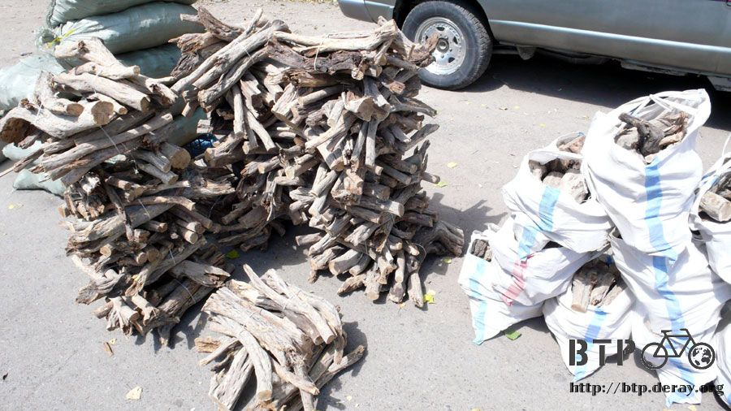
There were only two cities that I planned to visit and stay in Kazakhstan: Almaty, the ex-capital and Astana, the current capital.
Almaty was my first destination, and I was finally here by asking for direction nonstop since I entered this country.
So next time when I asked for direction, it would be for Astana.
It seemed everybody knows how to get to Astana, which is ONLY 1100 km away from Almaty.
It should be fairly easy to arrive there.
While focusing on keeping myself alive on the car-filled street, I was stopped by the traffic policemen,
I thought the bike was not allowed here, but it turned out that those policemen were just trying to shake hands with me.
Yes, very cute, I know.
I thought I should mention that I haven’t seen any road that bikes is not allowed in Kazakhstan so far.
There was a red plastic bag hanging out of my pack,
where I put tons of apricots that I didn’t know if I would ever be able to finish them.

I started get going as soon as I finished the lunch. It was very cloudy for the whole day, so it was very likely to rain any time,
I thought I should try to find a place, hopefully with roof of some sort since it
won’t be funny to get soaking wet while I was sleeping, to spend the night before it rained.
I would be officially leaving Almaty once I passed this arch-like thing.
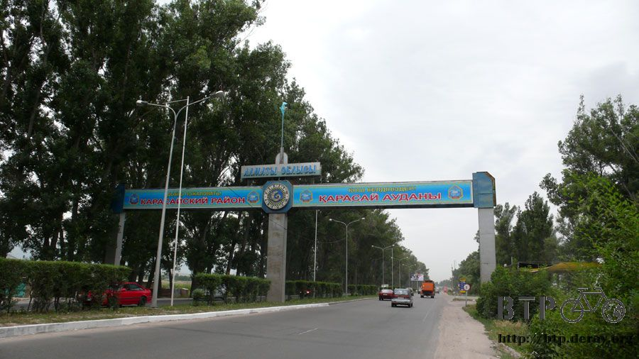
They were selling some strange stuff, a huge tank marked “KBAC”, and I wondered that was water or oil.
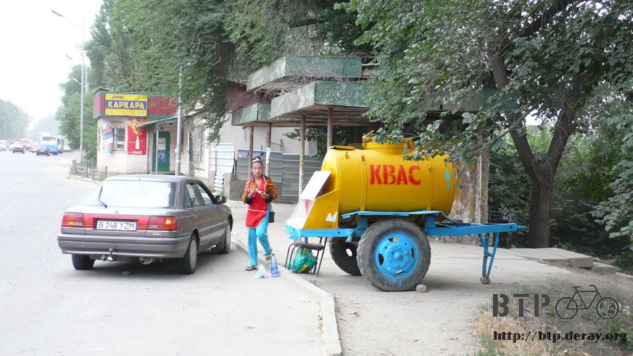
I had been circling the entire city and still couldn’t find the so called “Taiwan Trade Center”.
Maybe I should stop dreaming of helps from this particular place for tonight, I should accept the reality and counted on myself.
The rain started at around 4 o’clock. “Di-di-da-da” (this is how we describe the sound of raindrop in Chinese),
the raindrops just fell on my body; I knew the moment had come.
I had to keep going, though, nowhere I could stop at this area.
Finally I saw a “pretty” restaurant by the road, I brought Dido in immediately.
I stood under the eaves and stared at the rain that was getting heavier.
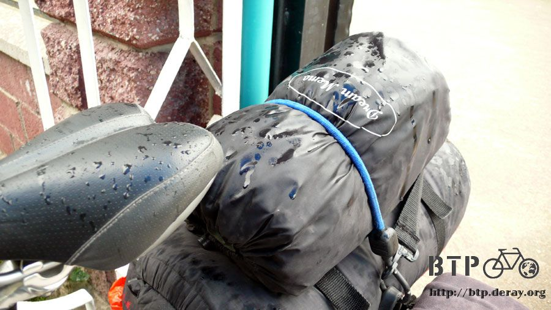
A waiter noticed me at some point so he peeked at me from inside.
Well, it was a bit embarrassing to just standing there, so I decided to order a pot of hot milk tea.
While waiting for the rain to stop, I was drinking my milk tea and making conversation with people work here.
This restaurant is pretty cool; everybody I can see here works here, except me, of course.
I plugged in the power and started to organize the photos and write the blog.
None of them have ever been to China, so I was so generously sharing my photos that I took at Urumqi, Sayram Lake,
Xian and so on, to fulfill their curiosity.

The one with glasses who was looking at me is the owner,
Falehodin(this is purely phonetic translation, since I have no idea how to spell that in English or Kazakh).
He looked at those photos taken in China and asked,”Are you sure these were not taken in Kazakhstan?”
In addition to some middle-aged ladies and guys, you can see lots of younger people worked part time at this type of restaurant.
This is Modiho, Syvita, and Nemart (again, just phonetic).
Those two girls were students, only 18. The guy at the bar was only 23. Meaning,
I AM THE OLDEST ONE AGAIN.
However, nobody believed that I was actually 26; guess I still had a baby face (haaa).
Nemart made a coffee for me, and Modiho translated our conversation between English and Kazakh.
She also corrected my Kazakh pronunciation, and taught me some more words.
From right to left: Modiho, another-customer, Nemart, Syvita, the owner’s wife-Qualan,
the owner-who-was reading-my-blog, and two waitresses.
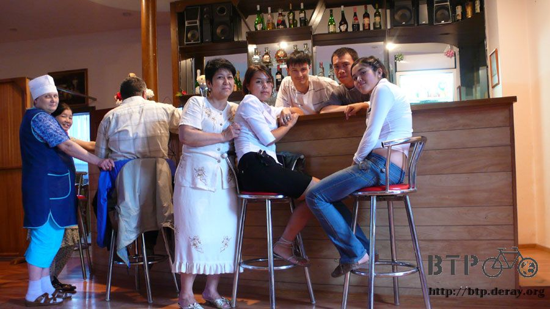
Dido was “invited’ to come in and stay in another room, I was invited to stay for overnight and a warm dinner.
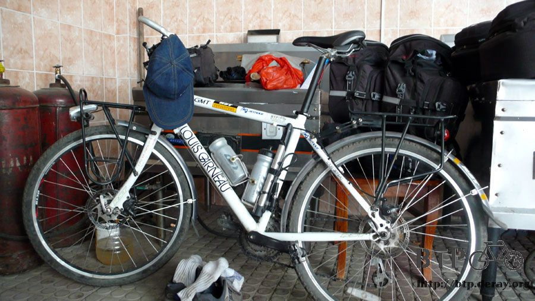
With milk tea, bread, some side dishes, poached eggs, hams and candy, everything was just purely yummy.
Sitting in the bar, I was drinking the coffee that Nemart made for me, and writing today’s blog.
What happened just minutes ago was now described in the blog in my laptop.
The real life suddenly became a story, just like in the book, “Neverending Story”,by Michael Ende,
a kid borrowed a book from the library and while reading it, he found himself was also in this book
I guess I will be seeing a lot of kindness and help from Kazakhs while I am in Kazakhstan,
which was a stranger country to me at the beginning,
and yet I have already touched the warm and friendly side of this country even since I stepped into its border.
They gave me hot drink when I was stopping for the rain;
they offered me a bed to sleep in as well as a free meal to fill my stomach.
Kazakh’s generosity and hospitality deeply touch me.
I love this country (even it has way too many cars running on the street), and I love the people here.
I thank god to arrange this rain, so that I was able to meet these people,
who arranged my staying overnight inside of this warm and friendly restaurant,
instead of somewhere outside, where it was only cold and lonely.